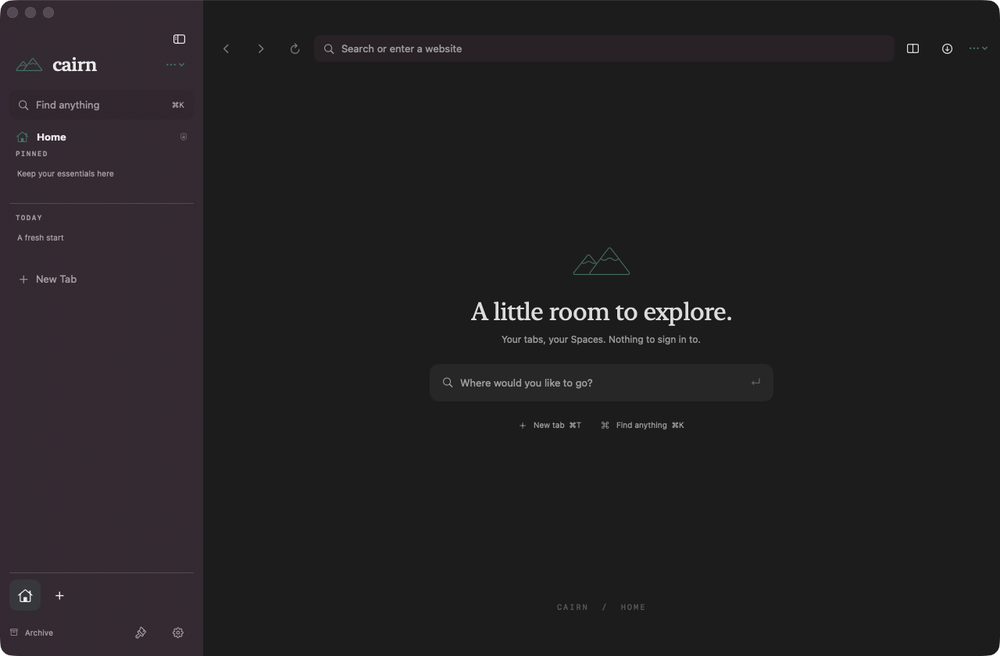
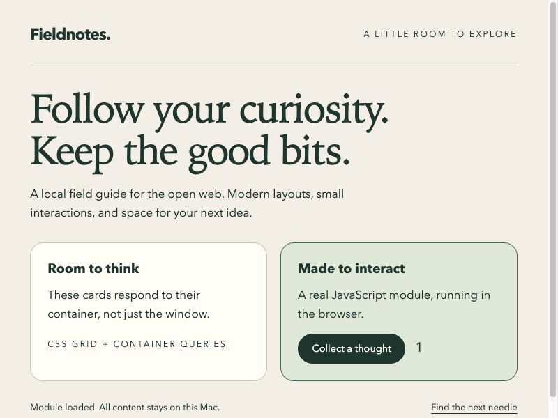

A Space for each thread
Separate your projects with Spaces. Pin the essentials, keep favorites close, and pick up your saved session where you left it.
Open source. Mac native. Still exploring.
A calmer place for a curious mind.
Your tabs, your Spaces.
Nothing to sign in to.

Less browser furniture
Built around the way a project unfolds: a few things you always need, a trail of ideas, and more than one place to think.
Separate your projects with Spaces. Pin the essentials, keep favorites close, and pick up your saved session where you left it.
A command bar, vertical tabs, split browsing, find, and zoom. Useful tools without another row of distractions.
No Cairn account or telemetry. Local history and preferences. Optional CSS and JavaScript Boosts, with an explicit trust decision.
Under the surface
The Chromium source build embeds the real Chromium Embedded Framework: native rendering, JavaScript modules, and responsive CSS. New Chromium builds select that engine by default; existing preferences stay yours.
The current v0.1.0 download uses WebKit, not Chromium. Chromium remains experimental: its pinned CEF release trails Chrome stable, and Developer ID signing and notarization are not complete. This is not a hardened replacement for your everyday browser.
Read the engine and security status
Take the next step
Cairn is a clean-room, independent project, not a fork of Arc and not affiliated with The Browser Company. The source is Apache-2.0 licensed. Read it, build it, make it yours.
A browser should open the web.
Not ask you to join another thing.